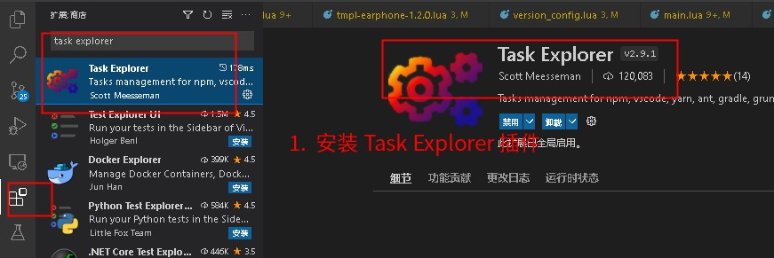
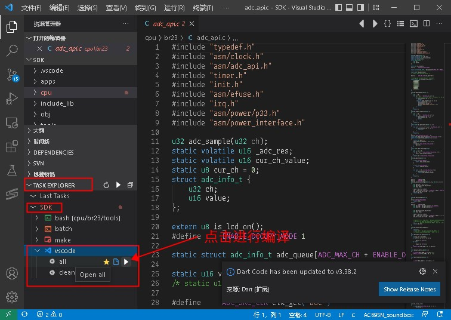
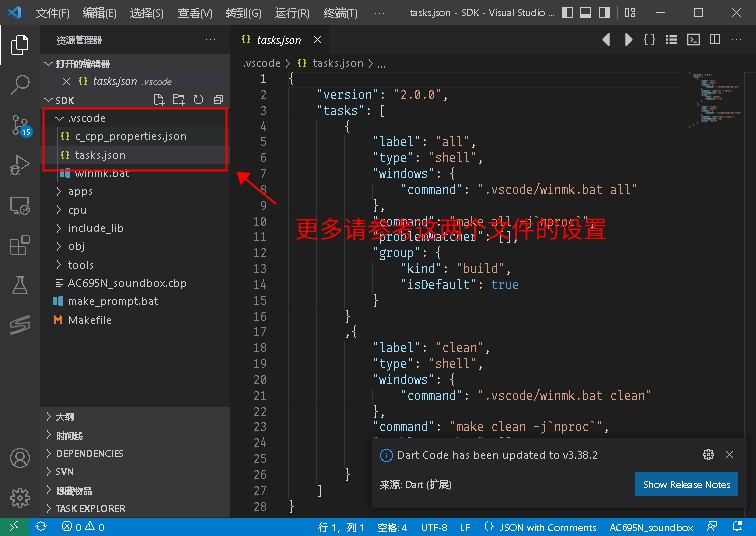

2.3. Building with VSCode
Newer SDKs support development and building with VSCode by default (on both Windows and Linux).
Building in VSCode works by calling the make command. On Linux, first configure the environment by following the steps in Building with make.
2.3.1. VSCode setup steps
The AC695N SDK is used as an example below:
2.3.1.1. Install the required extensions Task Explorer and C/C++
As shown below:


2.3.1.2. Open the SDK directory in VSCode
As shown below:

Note
If you cannot find [Open with Code] (通过 Code 打开) in the right-click menu, there are several possible reasons:
VSCode is not installed
The option to show it in the right-click menu was not checked when VSCode was installed
You can open VSCode directly, choose Open Folder from the VSCode menu bar and select the SDK directory, as shown below:


2.3.1.3. Select the corresponding task to build
As shown below:

The .vscode directory in the SDK directory contains the tasks.json and c_cpp_properties.json files. These two files are the configuration that VSCode needs. For more, refer to the settings in these files.

2.3.2. Troubleshooting VSCode build errors
VSCode builds by calling the Makefile, so first check that the Makefile works properly. See Building with make and Steps to troubleshoot Makefile build errors
Check that the extensions mentioned above are installed correctly.
Important
Note that the build tasks must be run through the extension. This is because the build process uses some additional tools, such as mkdir_win, make, etc.
These tools are generally released with the SDK (usually in the tools directory). Before building, the directory containing these tools must be added to the %PATH% environment variable.
This is done by the .vscode/winmk.bat script.
If you want to build in VSCode's built-in terminal, build by calling .vscode/winmk.bat the same way the build tasks call it.
2.3.3. Notes on building with VSCode
After the extensions are installed, the device-model selection option in the editor status bar, C syntax coloring, code highlighting, and go-to-definition/find-references navigation do not work
Possible causes and solutions:
Note
Extensions for STM32 microcontroller development, such as STM32-cube-clange, also come with their own IntelliSense engine,
which conflicts with VSCode's standard C/C++ engine. Only one of the two can be used, and STM32 extensions usually turn off the standard C/C++ engine.
The chip-model selection feature is provided by VSCode's standard "C/C++ environment"; simply re-enable that extension.
Usually, when an extension is installed, it warns you about the conflict and lets you choose "Disable" (关掉) or "Ignore (don't show again)" (无视（不再弹窗）). At that point, check carefully whether another installed extension is causing a conflict.
2.3.4. Common issues
Note
If the build reports errors, see Common Issues and Solutions
If downloading the firmware reports errors, see Why Can't the Program Be Downloaded?